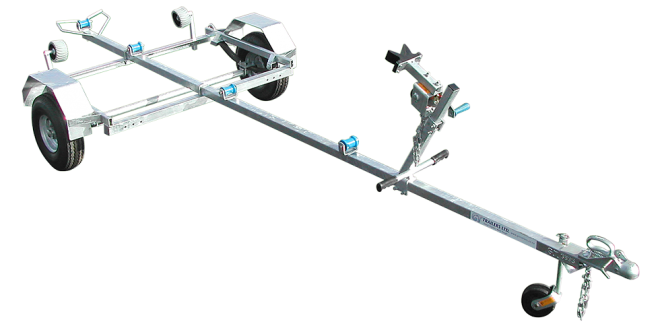
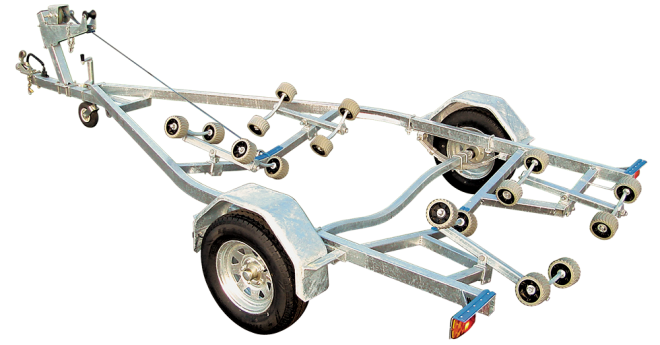
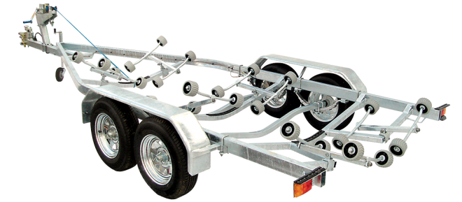
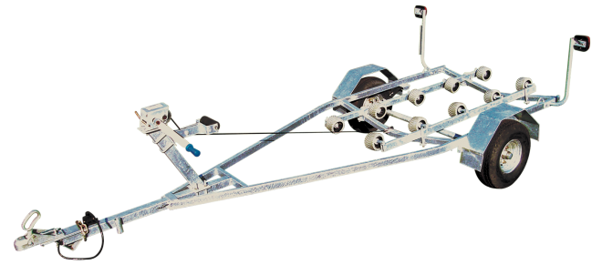

Our boat trailers are designed specifically for New Zealand conditions, built to handle saltwater environments and rough roads. We offer trailers for small dinghies to large vessels, with custom options available. All our boat trailers feature galvanized frames for maximum corrosion resistance.
Designed for boats 4.5 to 6.9 metres, these GT Quickload trailers from GT Trailers incorporate a high-quality wobble roller system and galvanised leaf springs.
Whether you need a nimble single-axle setup or a robust tandem-axle trailer with advanced braking, our range provides the perfect balance of strength and support for your boat.

SUITABLE FOR BOATS 3.6 TO 4.4 METRES
Suitable for a variety of boats from 3.6 to 4.4 metres including RIB and fully inflatable. Versatile T-bar options to full multi-roller. Fully hot-dip galvanised with adjustable winch post and suspension.
Read More
PERFECT BALANCE OF STRENGTH AND VERSATILITY
Trailers designed for medium-sized vessels, offering the perfect balance of strength and versatility for boats in the medium range. Single or tandem axle options available with multi-roller support systems.
Read More
HEAVY-DUTY TRAILERS FOR LARGE VESSELS
Heavy-duty trailers built for large vessels, featuring robust construction and advanced features for safe transport of bigger boats. Tandem axle with heavy-duty suspension and brake systems standard.
Read More
SPECIALIZED TRAILERS FOR PERSONAL WATERCRAFT
Specialized trailers designed specifically for jetskis and personal watercraft, featuring easy loading and secure transport. Jetski-specific roller systems make loading and unloading quick and easy.
Read MoreSuitable for a variety of boats from 3.6 to 4.4 metres including RIB and fully inflatable. Versatile T-bar options to full multi-roller.
Small boat trailers are adjustable with a number of options available:
Easily launch your Laser, Opti or inflatable off many types of beach surfaces. Designed for boats up to 3.6 metres.
Fitted with a coupling for low speed towing if necessary. An optional adjustable winch post with snub and handle is available. Load trolley, with boat, onto a standard road trailer.
Designed for boats 4.5 to 6.9 metres, these GT Quickload trailers from GT Trailers incorporate a high-quality wobble roller system and galvanised leaf springs.
Whether you need a nimble single-axle setup or a robust tandem-axle trailer with advanced braking, our range provides the perfect balance of strength and support for your boat.
Our large boat trailers are made to individual customer specifications to suit the requirements of the relative vessel. Trailers for boats 7 metres and larger – motor boats, cats and yachts. These trailers can incorporate the Quickload wobble roller system.
Specifications
| Model | Boat length | Load capacity | Axle | Wobble rollers | Tyre size |
|---|---|---|---|---|---|
| BT450 | 4.50m – 4.90m | Up to 1000kg | Single | 16 | 165/R13 |
| BT500 | 4.90m – 5.40m | Up to 1400kg | Single or Tandem* | 165/R13 | |
| BT550 | 5.40m – 5.90m | Up to 1500kg | 20 | 185/R14 | |
| BT600 | 5.90m – 6.40m | Up to 2000kg | 165/R13 | ||
| BT650 | 6.40m – 6.90m | 165/R13 |
*Hydraulic brake units fitted at extra cost.